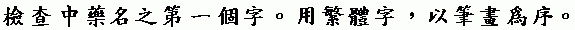

Listing of
Chinese herbs in numbers of strokes of first characters (traditional Chinese)

| Strokes | Chinese | Pinyin | Latin |
|---|---|---|---|
| 2 | ¤K ¨¤ ¯õ » | BA JIAO HUI XIANG | Anisum setellatum |
| 2 | ¤B » | DING XIANG | Caryophyllus aromatica, Linne |
| 2 | ¤B » | DING XIANG | Eugenia aromatica, Baillon. |
| 2 | ¤B » | DING XIANG | Eugenia caryophyllata, Thunb. |
| 2 | ¤K ¨¤ ¯õ » | BA JIAO HUI XIANG | Illicium verum Hooker filius. |
| 2 | ¤H °Ñ | REN SHEN | Panax Giaseng, C. A. Mey. |
| 2 | ¤H °Ñ ¤T ¤C, ¥Ð¤C | REN SHEN SAN QI, | Panax Ginseng C. A. Meyer. Forma Notogin Seng |
| 2 | ¤K¤ë¤ã | BA YUE ZA | Frutus akebia |
| 2 | ¤K¥Pªá | BA XIAN HUA | Hydrangea opuloides K. Koch. (H. boatensia DC) |
| 2 | ¤E»ÂÎ | JIU XIANG CHONG | |
| 2 | ¤Q¤j¥\³Ò | SHI DA GONG LAO | Hahonia japonica DC |
| 2 | ¤H°Ñ¤T¤C | REN SHEN SAN QI | Gynura pinnatifida DC; Panax notoginseng Chen; P. pseudoginseng |
| 3 | ¤j »[ | DA SUAN | Allium officinarum Hance. |
| 3 | ¤p »U | XIAO HAO | Berberis thunbergli, D. C. |
| 3 | ¤j ³Â | DA MA | Canabis indica |
| 3 | ¤j ³Â | DA MA | Canabis sativa, L. |
| 3 | ¤p Áª | XIAO JI | Cirsium japonicus, Max. |
| 3 | ¤j ¤p Áª | DA XIAO JI | Cirsium segetum. |
| 3 | ¤j Áª | DA JI | Cirsium spicatus, Max. |
| 3 | ¤t Ë| | CHUAN XIONG | Cnidium offcinale, Makino. |
| 3 | ¤t Ë| | CHUAN XIONG | Conioselinum unvittatum, Turcz. |
| 3 | ¤s ¯ü µã | SHAN ZHU YU | Cornus officinalis, Sieb. et Zucc. |
| 3 | ¤s ÝÓ | SHAN ZHA | Crataegus Pinnatifida, Bze. |
| 3 | ¤s ÝÓ | SHAN ZHA | Crataegus oxycantha. |
| 3 | ¤s ÝÓ | SHAN ZHA | Crataegus cuneata, S. et. Z. |
| 3 | ¤s ÃÄ | SHAN YAO | Dioscorea batatas, Decne. |
| 3 | ¤s ÃÄ | SHAN YAO | Dioscorea guingueloba, Thunb |
| 3 | ¤s ³Â ¶À | SHAN MA HUANG | Ephedra equisetina. |
| 3 | ¤s ³Â ¶À | SHAN MA HUANG | Ephedra sinica. |
| 3 | ¤s ³Â ¶À | SHAN MA HUANG | Ephedra distachya |
| 3 | ¤s ¨§ ®Ú | SHAN DOU GENG | Euchresta japonica, Benth. |
| 3 | ¤j ´u | DA JI | Euphorbia pekinensis¡A Rupr |
| 3 | ¤p ¯õ » | XIAO HUI XIANG | Foeniculum vulgare, L. |
| 3 | ¤t ¨© | CHUAN BEI | Fritillaria roylei, Hook. |
| 3 | ¤s ±÷ ¤l | SHAN ZHI ZI | Gardenia florida, L. |
| 3 | ¤T ¤C ¯ó | SAN QI CAO | Gynura pinnatifida, D.C. |
| 3 | ¤j ³Á ¡A ³Á ªÞ | DA MAI, MAI YA | Hordeum sativum Jess. var. vulgar, Hack. |
| 3 | ¤j · ¤l | DA FENG ZI | Hydnocarpus alpina, Weight. |
| 3 | ¤j · ¤l | DA FENG ZI | Hydnocarpus anthelmintica. |
| 3 | ¤g ¤ì » | TU MU XIANG | Inula helenium. L. |
| 3 | ¤k s ¤l | RU ZHEN ZI | Ligustrum lucidum, Ait. |
| 3 | ¤t ¤j ¶À | CHUAN DA HUANG | Rheum officinale, Bail. |
| 3 | ¤T Ù± | SAN LING | Scirpus maritmus, L. |
| 3 | ¤g Ó¬ d | TU FU LING | Smilax china. L. |
| 3 | ¤g Ó¬ d | TU FU LING | Smilax glabra, Roxb. |
| 3 | ¤s ´Ô | SHAN JIAO | Xanthoxylum piperitum, D.C. |
| 3 | ¤j ´Ç | DA ZAO | Zizyphus vulgaris, Lam. var. inermis, Bunge. |
| 4 | ¤ ¥[ ¥Ö | WU JIA PI | Acanthopanax sessiliflorus, Se |
| 4 | ¤ ¥[ ¥Ö | WU JIA PI | Acanthopanax spinosum¡A Mig |
| 4 | ¤û ½¥ | NIU XI | Achyranthes bidentata, Blume |
| 4 | ¤û «ó | NIU BIAN | Aconitum lycoctonum, L |
| 4 | ¤ì ³q | MU TONG | Akebia guinata, D. C. |
| 4 | ¤ì ³q | MU TONG | Akebia lobata, Dene |
| 4 | ¤û ã® ¤l | NIU BANG ZI | Arctium lappa, L |
| 4 | ¤û ã® ¤l | NIU BANG ZI | Arctium majus, Schk. |
| 4 | ¤Ñ «n ¬P | TIAN NAN XING | Arisaemi japonicum, Blume |
| 4 | ¤Ñ ªù ¥V | TIAN MEN DONG | Asparagus lucidus, Lindl |
| 4 | ¤ì » | MU XIANG | Aucklandia costus, Falk |
| 4 | ¤Ú ´u ¤Ñ | BA JI TIAN | Bacopa monniera, Hayata |
| 4 | ¤ì ´Ö | MU MIAN | Bombox melebicum |
| 4 | ¤û ¶À | NIU HUANG | Calculus bovis |
| 4 | ¤Ñ ¦W ºë ¡A Åb ½¾ | TIAN MING JING, HE SHI | Carpesium abrotanoides, L. |
| 4 | ¤Ñ ¦W ºë | TIAN MING JING | Carpesium divariecatum |
| 4 | ¤É ³Â | SHENG MA | Cimicifuga foetida, L. var, intermedia, Regel |
| 4 | ¤É ³Â | SHENG MA | Cimicifuga heracleifolia |
| 4 | ¤ì ¨¾ ¤v | MU FANG JI | Coculus thunbergii |
| 4 | ¤é ¥» ¤ì ¨¾ ¤v | RI BEN MU FANG JI | Coculus trilobus, D.C. |
| 4 | ¤é ²£ ©µ J ¯Á | RI CHAN YAN HU SU | Corydalis decumbens, Pers. |
| 4 | ¤é ²£ ©µ J ¯Á | RI CHAN YAN HU SU | Corydalis remata Fisch. var. genuina, Maxim. |
| 4 | ¤Ú ¨§ | BA DOU | Croton tiflium, L. |
| 4 | ¤é ²£ µé µ· ¤l | RI CHAN TU SI ZI | Cuscuta japonica, Chois. |
| 4 | ¤ì ¥Ê | MU GUA | Cydonia sinensis, Thonrin. |
| 4 | ¤ì ¸é | MU ZE | Eguisetum hyemale, L. var. japonicum, Mild. |
| 4 | ¤é ²£ ¯³ ¥Ö | RI CHAN QIN PI | Fraxnius japonica, Rl. |
| 4 | ¤é ²£ ¨© ¥À | RI CHAN BEI MU | Fritillaria verticillata, Willd, var, Thungar |
| 4 | ¤Ñ ³Â | TIAN MA | Gastrodia elata, Blume. |
| 4 | ¤Ú ´u ¤Ñ | BA JI TIAN | Herpestis monnieria. |
| 4 | ¤ì » | MU XIANG | Inula racemosa, Hook fil. |
| 4 | ¤Ñ »O ¯Q ÃÄ | TIAN TAI WU YOA | Lindera strychnifolia, Viel. |
| 4 | ¤é ²£ «p ¾ë | RI CHAN HOU PU | Magnolia obovata, Thunb. |
| 4 | ¤é ²£ ¿t ¥» | RI CHAN GAO BEN | Northosmyrnium japonicum, Mig. |
| 4 | ¤õ ¬´ ¥À ¯ó | HUO TAN MU CAO | Polygonum chinenese Linn. |
| 4 | ¤¦ °Ñ | DAN SHEN | Radix salivae miltiorrhizae |
| 4 | ¤ò ×[ | MAO LIANG | Ranunculus acris, L. |
| 4 | ¤é ²£ ¦a ¶À | RI CHAN DI HUANG | Rehmannia glutinosa, Libosch, var. purpurea, |
| 4 | ¤¦ ¥Ö | DAN PI | Sallvia chinensis, Benth. |
| 4 | ¤¦ ¥Ö | DAN PI | Sallvia multiorrhiza, Bge. |
| 4 | ¤ý ¤£ ¯d ¦æ | WANG BU LIU XING | Saponaria vaccaria, L. |
| 4 | ¤ì » | MU XIANG | Saussurea lappa, Clarke. |
| 4 | ¤é ²£ W °Ñ | RI CHAN KU SHEN | Sophora angustifolia, Sieb. et. Zucc. |
| 4 | ¤Ñ ªá ¯», ¥Ê ço, ¬A ço | TIAN HUA FEN | Trichosanthis kirilowii, Maxim. |
| 5 | ¥Û Ûu »Z | SHI CHANG PU | Acorus gramineus, Soland |
| 5 | ¥P Åb ¯ó | XIAN HE CAO | Agrimonia eupatonia, L. var. |
| 5 | ¥Õ ×^ çM | BAI DOU KOU | Amomum cardamum, L. |
| 5 | ¥Õ ÀY »c | BAI TOU WENG | Anemone chinensis, Benze |
| 5 | ¥Õ ªé | BAI ZHI | Angelica anomala |
| 5 | ¥Õ ªé | BAI ZHI | Angelica glabra, Makino |
| 5 | ¥Õ ¥º | BAI ZHU | Atractylodes ovata, Thunb |
| 5 | ¥Õ Í¿ | BAI JI | Blettilla striata, Reichp. |
| 5 | ¥V ÂÎ ®L ¯ó | DONG CHONG XIA CA | Cordyceps sinensia, Sacc. |
| 5 | ¥P ¥Ù | XIAN MAO | Curculigo ensifolia, R. Br. |
| 5 | ¥Õ «e | BAI QIAN | Cynachum japonicum, M. et D. var. purpurasec |
| 5 | ¥Õ ·L | BAI WEI | Cynachum atratum, Bunge. |
| 5 | ¥Û ±Ø | SHI HU | Dendrobium monielforme, Kranzl. |
| 5 | ¥Û ±Ø | SHI HU | Dendrobium nobile, Lindl. |
| 5 | ¥Õ ÂA | BAI XIAN | Dictamnus albus, L. |
| 5 | ¥Ì ¹E | GAN SUI | Euphorbia sieboldiana, M. et. D. |
| 5 | ¥_ ¬ü ¹_ §k | BEI MEI GOU WEN | Gelsemium sempervirens. Ait. |
| 5 | ¥Õ ªG | BAI GUO | Gingko biloba, L. |
| 5 | ¥Ì ¯ó | GAN CAO | Glycyrrhiza glabra L. var. glandulifera, Rega |
| 5 | ¥Û ¨M ©ú | SHI JUE MING | Halitotis gigatea, Chem. |
| 5 | ¥Õ ªé | BAI ZHI | Heracleum lanatum, Machkx. |
| 5 | ¥Û »[ | SHI SUAN | Lycoris ratiata. |
| 5 | ¥V ¸ª ¤l | DONG KUI ZI | Malva verticillata, L. |
| 5 | ¥Õ ±` ¤s | BAI CHANG SHAN | Mussaenda divaricata, Hutchinson. |
| 5 | ¤ô ¥P | SHUI XIAN | Narcissus tazetta, L. Var. chinensis., R. |
| 5 | ¥Õ ¨¢ | BAI SHAO | Paeonia albiflora Pallas, var. trichocarpa, B |
| 5 | ¥Ð ¤T ¤C | TIAN SAN QI | Panax pseud–Ginseng, Wall. |
| 5 | ¥b ®L | BAN XIA | Pinella ternata, Breitenbach. |
| 5 | ¥É ¦Ë | YU ZHU | Polygonatum officinale. |
| 5 | ¥É ¦Ë | YU ZHU | Polygonatum thunbergii, Morr. et Decne. |
| 5 | ¥É ¦Ë | YU ZHU | Polygonum officinale, All. |
| 5 | ¥Õ ÀY »c | BAI TOU WENG | Pulsatila nuttalliana, Spreng. |
| 5 | ¥Õ ÀY »c | BAI TOU WENG | Pulsatila daurica, Spreng. |
| 5 | ¥Û ºh | SHI LIU | Punica granatum. L. |
| 5 | ¥Ù ×[ | MAO LIANG | Ranunculus japonicus. |
| 5 | ¥_ ¤ ¨ý ¤l | BEI WU WEI ZI | Schizandra chinesis, Baill. |
| 5 | ¥È °Ñ | XUAN SHEN | Scrophularia oldhami, Oliv. |
| 5 | ¥Õ ªã ¤l | BAI JIE ZI | Sinapis alba, L. |
| 5 | ¥Õ Äö | BAI XIAN | Skimmia repens. |
| 5 | ¥É ¸¾ ¶Á | YU SHU SHU | Zea mays, L. |
| 5 | ¥Õªá³D¦Þ¯ó | BAI HUA SHE SHE CAO | Heydyotis diffusa, Willd. Roxb. |
| 5 | ¥Õªá³D¦Þ¯ó | BAI HUA SHE SHE CAO | Oldenlandia diffusa |
| 6 | ¦X Åw ¥Ö | HE HUAN PI | Albizzia julibrissin, Durazz |
| 6 | ¦ã ¸ | AI YE | Artemisia vulgaris, L. var. Indica, Maxim |
| 6 | ¦× çv »T | ROU CONG RONG | Boschniakin glabra, C.A. Mig |
| 6 | ¦y ¸ µf Âm | JIAN YE FAN XIE | Cassia acutifolia, Delile |
| 6 | ¦× ®Û | ROU GUI | Cinnamoum loureirii, Nees. |
| 6 | ¦× çv »T | ROU CONG RONG | Cistanche salsa, Benth, et Hook. |
| 6 | ¦è ¥Ê | XI GUA | Citrullus vulgaris |
| 6 | ¦a ½§ ¤l | DI FU ZI | Kochia scoporia, Schurod. |
| 6 | ¦× ×^ çM | ROU DOU KOU | Myristica fragrans, Houttuyn. |
| 6 | ¦Ë ¸` ¤H °Ñ | ZHU JIE REN SHEN | Panax japonicum, C. A. Mey. forma typicum. |
| 6 | ¨ª ¤p ¨§ | CHI XIAO DOU | Phaseolus radiatus, L. var. aurea, Prain. |
| 6 | ¦a ¶À | DI HUANG | Rehmannia glutinosa, Libosch. |
| 6 | ¦Ï ¿á | YANG TI | Rumex japonicus, Mein. |
| 6 | ¦a ·® | DI YU | Sanguisorba officinalis, L. |
| 6 | ¦Ê ³¡ | BAI BU | Sophora japonica, Mig. |
| 6 | ¦Ê ³¡ | BAI BU | Sophora ovata, Nakai. |
| 7 | ¨F °Ñ | SHA SHENG | Adenophora verticillata, Fisch |
| 7 | ª÷ ¿ú ¥Õ ªá ³D | JIN QIAN BAI HUA | Bungus parvus |
| 7 | ¨M ¦W ¤l | JUE MING ZI | Cassia tora, L. |
| 7 | ¦ò ¤â | FO SHOU | Citrus medica, L. var, ascrodactyllis, Sw. |
| 7 | ¦ò ¤â | FO SHOU | Citrus medica, var, chirocarpus, Lonr. |
| 7 | ¨S ÃÄ | MO YAO | Commiphora molmol, Engi. |
| 7 | ©µ ½k ¯Á | YAN HU SUO | Corydalis bulbosa D.C. var. typica, Regl. |
| 7 | ©µ J ¯Á | YAN HU SUO | Corydalis ternata, Makino. |
| 7 | Í´ ªá | YUAN HUA | Daphne genkwa, Sieb. et. Zucc. |
| 7 | ¨§ ´³ ¿ß | DOU BAN MAO | Epicantha gorhami, Marseul. |
| 7 | §å ªI ¸ | PI PA YE | Eriobotrya japonica, Lindle. |
| 7 | §ù ¥ò | DU ZHONG | Euonymus ulmoides, Oliv. |
| 7 | §d ¯ü µã | WU ZHU YU | Evodia rutaecarpa Hook. fit. et. Th. |
| 7 | ¹ ¯ü µã | SHI ZHU YU | Fagara ailanthoides, Engl. |
| 7 | ¨m ²ó | ZAO JIA | Gleditschia horrida, Makio. |
| 7 | ¨} Û¥ | LIANG DANG | Hyoscyamus niger, L. |
| 7 | ©ø ¥¬ | KUN BU | Laminaria japonica, Ares. |
| 7 | §Ô ªF | REN DONG | Lonicera japonica, Thunb. |
| 7 | ¨¯ ¦i | XIN YI | Magnolia kobus, D.C. |
| 7 | §¨ ¦Ë ®ç | JIA ZHU TAO | Nerium incidum, Mill. |
| 7 | §¨ ¦Ë ®ç | JIA ZHU TAO | Nerium odorum, Solaud. |
| 7 | ¨d Ä÷ | MU LI | Ostrea cucullata, Born. |
| 7 | ¨d ¤¦ | MU DAN | Paeonia moutan, Sims. |
| 7 | ¨Å » | RU XIANG | Pistacia lenticus, L. |
| 7 | ¨® «e | CHE QIAN | Plantago major. L. var. asiatica, D.C. |
| 7 | ¦ó º ¯Q | HE SHOU WU | Polygonum multiforum, Thund. |
| 7 | ¨¾ · | FANG FENG | Siler divaricatum, Benth, et Hook. |
| 7 | ¨¾¤v | FANG JI | Aristolochia fangchi Wu |
| 8 | ª¾ ¥À | ZHI MU | Anemarrhena asphodeloides, Bunge |
| 8 | «C »U | QING HAO | Artemisia apiacea, Hance |
| 8 | ªã ¤l | JIE ZI | Brassica cernua, Forbes et Hemsley |
| 8 | ¬õ ªá | HONG HUA | Carthamus tinctorius, L. |
| 8 | ª¯ ¯á | GOU JI | Cibontium barometz, Sm, |
| 8 | ªü ½¦ | E JIAO | Colla corii asini |
| 8 | ª÷ ¤ò ª¯ ¯á | JIN MAO GOU JI | Dicksonid barometz, Link. |
| 8 | ªO ÂÅ ®Ú | BAN LAN GEN | Isatis tinctoria L. |
| 8 | ¬e ¤l ¡A ¦a °© ¥Ö | GOU QI, DI GU PI | Lycium chinense, Mill. |
| 8 | Í´ «C | YUAN QING | Lytta vesicatoria, Fabricus. |
| 8 | ©M ±` ¤s | HE CHANG SHAN | Orixa japonica, Thunb. |
| 8 | ªê °© | HU GU | Os tigris |
| 8 | ªê §ú | HU ZHANG | Polygonum cuspidatum, S. et. Z. |
| 8 | ªê §ú | HU ZHANG | Polygonum reynoutria, Makino. |
| 8 | ¨Ï §g ¤l | SHI JUN ZI | Quisgualis indica, L. |
| 8 | ª÷ ôL ¤l | JIN YIN ZI | Rhus laevigata, Michx. |
| 8 | ª´ ºÀ ªá | MEI GUI HUA | Rosa rugosa, Thunb. |
| 9 | ¬Û «ä ¤l | XIANG SI ZI | Abrus precatorius, L. |
| 9 | ¬â ¤¯ | SHA REN | Amomum xanthioides, Wallich |
| 9 | W ¦ã | KU AI | Artemisia absithium, L. |
| 9 | ¬a ¡A ³¯ ¥Ö | GAN , CHEN PI | Citrus aurantium, L. subsp. noblis, Makino. |
| 9 | ¬c | YOU | Citrus decumama |
| 9 | ¬a ¡A ³¯ ¥Ö | GAN CHEN PI | Citrus nobilis, Lour. |
| 9 | «Â ÆF ¥P | WEI LING XIAN | Clematis japonica Houtt. var. simsii, Makino. |
| 9 | J ×h | HU SUI | Coriandrum sativum, L. |
| 9 | «n ¥Ê ¤l | NAN GUA ZI | Cucurbita mos. D. var. toonas, Makino. |
| 9 | «n ¥Ê ¤l | NAN GUA ZI | Cucurbita moschata, Duch. var. melonae formis |
| 9 | » ªþ ¤l | XIANG FU ZI | Cyperes rotundus, L. |
| 9 | J ù °Ë | HU LO FU | Daucus carota, L. |
| 9 | ¬U | SHI | Diospyros chinsenis, Bl. |
| 9 | ¬U | SHI | Diospyros kaki, L. f. |
| 9 | «ó ¨§ | BIAN DOU | Dolichos lollab, L. |
| 9 | » ð¸ | XIANG RU | Elscholtzia patrini, Garche. |
| 9 | «ö ¾ð ¸ | AN SHU YE | Eucalyptus globulus, Labill. |
| 9 | J ®ç | HU TAO | Juglans regia, L. var. Sinensis |
| 9 | «p ¾ë | HOU PU | Magnolia officinalis, Rehd. et Wils. |
| 9 | W ´z ¤l | KU JIAN ZI | Melia azedarach, L. sub. var. Toosendan, Makino. |
| 9 | «n ¤Ñ ¦Ë | NAN TIAN ZHU | Nandina domestica, Thunb. |
| 9 | ¬õ ¥Ö ¬h | HONG PI LIU | Periploca sepium, Bung. |
| 9 | «e J | QIAN HU | Peucedanum decursivum, Maxim |
| 9 | W ¦Ë | KU ZHU | Phyllostachys bambusoides, S. et Z. |
| 9 | J ¶À ½¬ | HU HUANG LIAN | Picrorhiza kurrosa, Royle. |
| 9 | J ´Ô | HU JIAO | Piper nigrum, L. |
| 9 | § §õ ¤¯ | YU LI REN | Prunus japonica, Thunb. |
| 9 | W §ö ¤¯ | KU XING REN | Prunus sibiricus, L. |
| 9 | W §ö ¤¯ | KU XING REN | Prunus armeniaca, L. var. ansu, Maxim. |
| 9 | W §ö ¤¯ | KU XING REN | Prunus mandschurica, Kochne. |
| 9 | W °Ñ | KU SHEN | Sophora flavescens. Ait. |
| 9 | ¬ï ¤s ¥Ò | CHUAN SHAN JIA | Squama manitis |
| 9 | J Ī ¤Ú | HU LU BA | Trigonella foe graecum. |
| 9 | » ¥Ù | XIANG MAO | Cymbopogon citratus (DC.) Stapf. |
| 10 | ¯Q ÀY ¡A ªþ ¤l | WU TOU FU ZI | Aconitum Fischeri Reich |
| 10 | ¯Q ÀY ¡Aªþ ¤l | WU TOU | Aconitum autumnale¡A Lindl |
| 10 | ¯Q ÀY | WU TOU | Aconitum chense; Aconitum variegatum |
| 10 | ¯Q ÀY | WU TOU | Aconitum mandschuricum¡ANakai |
| 10 | °ª ¨} «¸ | GAO LIANG JIANG | Alpinia officiarum Hance |
| 10 | ¯ó ªG | CAO GUO | Amomum medium, Lour. |
| 10 | °¨ °Â d | MA DOU LING | Aristolochia contorta, Bunge |
| 10 | °¨ °Â d | MA DOU LING | Aristolochia debili, Sieb. et Zuce |
| 10 | °¨ °Â d | MA DOU LING | Aristolochia kaempferi, Willd. |
| 10 | ¯ô ³¯ »U | YIN CHEN HAO | Artemisia capillaris, Thunb |
| 10 | ®g ¤z | SHE GAN | Belamcanda chinensis, Lam |
| 10 | ®ã J | CHAI HU | Bupleruum falctum, L. |
| 10 | °¨ Ä_ | MA BAO | Calculus equi |
| 10 | ¯U ¸ µf Âm | XIA YE FAN XIE | Cassia anfustifolia, Vahl |
| 10 | ®Û , ®Û ªK , ®ÛªK¤ß | GUI, GUI ZI, GUI ZI XIN | Cinnamoum cassia, Blume. |
| 10 | ®ü ¦{ ±` ¤s | HAI ZHOU CHANG SHAN | Clerodendron trichotomum, Thumb. |
| 10 | ®ü ¤H ¯ó | HAI REN CAO | Digenia simplex, Ag. |
| 10 | °© ¸H ¸É | GU SUI BU | Drynaria frotunei F. m. |
| 10 | °Ý ¯ð | WEN JING | Equisetum arvense, L. |
| 10 | °Ý ¯ð | WEN JING | Euquisetetum arvense, L. |
| 10 | ¯³ ¥Ö | QIN PI | Fraxinus bungeana, D.C. |
| 10 | ¯³ ¥Ö | QIN PI | Fraxnius bungeana, D.C. var. pubinervis, Bl. |
| 10 | ®ý ¨© | ZHE BEI | Fritillaria callicola. |
| 10 | ®ý ¨© | ZHE BEI | Fritillaria thumberglii Mig. |
| 10 | ¥Ù ®Ú | MAO GEN | Imperata arundinacea, Cyr. var. koenigii, hac |
| 10 | ¯³ ÊM | QIN QIU | Justicia gendarussa, L. |
| 10 | °¨ «k | MA BO | Lashiosphaera fenzli, Keich. |
| 10 | ¯q ¥À ¯ó ¡AÐr êà¤l | YI MU CAO, CHONG | Leonurus sibiricus, L. |
| 10 | °¨ §À ·í Âk | MA WEI DANG GUI | Ligusticum acutilobum, S. et Z. |
| 10 | ¯ó ·í Âk | CAO DANG GUI | Ligusticum japonium, Max. |
| 10 | ³Á ¥V | MAI DONG | Liriope graminifoia, Baker. |
| 10 | °¨ «k | MA BO | Lycoperdon gemmatum, Satsch. |
| 10 | ®ü ª÷ ¨F | HAI JIN SHA | Lygodium japonicum, Sw. |
| 10 | ¯ðªã | JING JIE | Mepeta japonica, Maxim. |
| 10 | ®á ¡A ®á ¥Õ ¥Ö | SANG, SANG BAI PI | Morus bombycis, Koidz. |
| 10 | ®á ¡A ®á ¥Õ ¥Ö | SANG, SANG BAI PI | Morus multicaulis, Perr. |
| 10 | Åe » | SHE XIANG | Moschus moschiferus, L. |
| 10 | ´³ çº | BAN MOU | Mylabirs cichoii, L. |
| 10 | ¯ð ªã | JING JIE | Nepeta japonica, Maxim |
| 10 | ®Ü ±ð | JIE GENG | Platycodon grandiflorum A. De. Candolle. |
| 10 | ®± °Ñ | QUAN SHEN | Polygonum bistorta, L. |
| 10 | °© ¸H ¸É | GU SUI BU | Polypodium fortunei. Kze. |
| 10 | ®Ü ¹ê | JIE SHI | Poncinus trifoliata, Rafin. |
| 10 | Ó¬ d | FU LING | Poria cocos, Wolf. |
| 10 | °¨ ¾¦ ³A | MA CHI XIAN | Portulacea oleracea, L. |
| 10 | ¯Q ±ö | WU MEI | Prunus mume, Sieb. et Zucc. |
| 10 | ®ç ¤¯ | TAO REN | Prunus persica, Sieb. et Zucc. |
| 10 | ®ç ¤¯ | TAO REN | Prunus persich S. et Z. |
| 10 | ®Ü ¹ê | JIE SHI | Pseudaegle trifoliata, Makino. |
| 10 | Ó} ¯ó | XI CAO | Rubia cordifolia, L. |
| 10 | Ó} ¯ó | XI CAO | Rubia cordifolia, L. var. mungista, Mig. |
| 10 | ®ü Ħ | HAI ZAO | Sargassum siliquastrum. Ag. |
| 10 | ¯ô ¬ò | YIN YU | Skimmia japonica, Thunb. |
| 10 | Ë ¦a «ý, º~ ¨¾¤v | DAO DI GONG, HAN | Stephania tetrandra, S. Moore. |
| 10 | ¯ù | CHA | Thea sinensis, L. |
| 10 | Ñë ço, ¥Ê ço, ¤Ñ ªá ¯» | GUA LOU | Trichosanthis japonica, Reget. |
| 10 | Ñë ço, ¥Ê ço, ¤Ñ ªá ¯» | GUA LOU | Trichosanthis kirilowii, Maxim. |
| 10 | °¨ Ã@ ¯ó | MA BIAN CAO | Verbena officinalic, L. |
| 10 | ¯q ´¼ | YI ZHI | Zingiber nigrum, Garth. |
| 11 | ³· ¤W ¤@ ªK »U | XUE SHANG YI ZHI HAO | Aconitum anthora, L. |
| 11 | ²Ó ©¯ | XI XIN | Asarum sieboldi, Mig |
| 11 | ¶À ¯Ï | HUANG QI | Astragalus Henryi |
| 11 | ¶À ¯Ï | HUANG QI | Astragalus Hoantchy |
| 11 | 1 | HUANG QI | Astralagus menbranaceus |
| 11 | ®L ¬\ ¯ó | XIA KU CAO | Brnella vulgaris, L. |
| 11 | ³À ¯ñ | LU RONG | Cervus elaphus, L. |
| 11 | ¶À ½¬ | HUANG LIAN | Coptis chinensis, Franch. |
| 11 | ¶À ³Â | HUANG MA | Corchorus capsularis, L. |
| 11 | ×m ¥º | E ZHU | Curcuma zedoaria, Boscoc. |
| 11 | °Ò ªû ù | MAN TUO LO | Datura stramonium, L. |
| 11 | ±` ¤s ¡A ¶À ±` ¤s | CHANG SHAN, HUANG CHANG SHAN | Dichroa febrifuga, Lour. |
| 11 | ³Â ¶À | MA HUANG | Ephedra distachya |
| 11 | ±V ´Ô | YA JIAO | Fagara schinifolia, Engl. |
| 11 | ³s ¼ | LIAN QIAO | Forsythia supensa, Vahl. |
| 11 | ±` ¬K ÃÃ | CHANG CHUN TENG | Hedera helix, var. colchica. |
| 11 | ±` ¬K ÃÃ | CHANG CHUN TENG | Hedera helix, L. |
| 11 | ¤Ú ¸¾ ¸ª | HUANG SHU KUI | Hibiscus maihot, L. |
| 11 | ±Û ÂÐ ªá | XUAN FU HUA | Inula britannica, D.C. |
| 11 | ¾~ ¤ù | YA PIAN | Paparver somniferum, Linnaeus. |
| 11 | ±Ñ Âæ | BAI JIANG | Patrinia scabiosaefolia, Link. |
| 11 | ³L °C | QIU YIN | Perichaeta communissma, G. and H. |
| 11 | ¶À ¬f | HUANG BAI | Phellodendron amourense, Ruprecht. |
| 11 | ²H ¦Ë | DAN ZHU | Phyllostachys nigra, Munro. var. henonis, Mak |
| 11 | ¶À ºë | HUANG JING | Polygonatum chinense, Kth. |
| 11 | ²Ó ¸ ¥Õ ÀY »c | XI YE BAI TOU WEN | Pulsatila vulgaris, Mill. |
| 11 | ²a ¼y ¦a ¶À | HUAI QING DI HUAN | Rehmannia glutinosa Libosch var. huaichingens |
| 11 | °® º£ | GAN CHI | Rhus vernicifera, D. C. |
| 11 | Û| ³Â ¤l | BI MA ZI | Rieinus communis, L. |
| 11 | ¶À ÍÁ | HUANG QIN | Scutellaria. baicalensis, Georg. |
| 11 | ³D §É ¤l | SHE CHUANG ZI | Selinum monniceri, L. |
| 11 | ³Â¶À | MA HUANG | Ephedra sinica Stapf., |
| 11 | ³Â¶À | MA HUANG | Ephedra equisetian Bunge |
| 11 | ³Â¶À | MA HUANG | Ephedra intermedia Schrenk |
| 12 | µµ b | ZI YUAN | Aster tataricus, L. f. |
| 12 | µf ¤ì ¥Ê | FAN MU GUA | Carica papaya, L. |
| 12 | µâ ªá | JU HUA | Chrysanthemun sinense, Sabin |
| 12 | ´Â ÂA ²£ ©µ J ¯Á | CHAO XIAN CHAN YA | Corydalis Nakaii, Ishidoya. |
| 12 | µf ¬õ ªá | FAN HONG HUA | Crocus sativus, L. |
| 12 | µé µ· ¤l | TU SI ZI | Cuscuta chinensis, Lam. |
| 12 | µé µ· ¤l | TU SI ZI | Cuscuta j. chois. var. viriclicaulis, Honda. |
| 12 | ´ÂÂA²£¦óº¯Q | CHAO XIAN CHAN HE SHOU WU | Cynachum welfordii, Hemsl. |
| 12 | ´Â ÂA ¥Õ ÂA | CHAO XIAN BAI XIA | Dictamnus dasycarpus, Turc. |
| 12 | çn îN | BI JIE | Dioscorea sativa, L. |
| 12 | çn îN | BI JIE | Dioscorea tokooro, Mak. |
| 12 | ´Â ÂA ²£ ²] ¦Ï ô¹ | CHAO XIAN CHAN YI | Epimedium mac, M. et. D. var, violaceum, Fran |
| 12 | µµ ®Ú ¯ó | ZI GEN CAO | Lithospermum officinale, L. var. erythrorhizo |
| 12 | µµ Ĭ | ZI SU | Perilla frutescens, Breit. var. cripa, Decne. |
| 12 | µð ÓÈ | GE JIE | Phrynosoma cornuta |
| 12 | °Ó ³° | SHANG LU | Phytolacca acinosa Roxb. var. Kaempferi. |
| 12 | °Ó ³° | SHANG LU | Phytolacca acinosa Roxb. var. esculenta. |
| 12 | ´Â ÂA ¥Õ ÀY »c | ZHAO XIAN BAI TOU | Pulsatila koreana, Nakai. |
| 12 | µÜ µè | LAI FU | Raphanus sativus, L. var. macropodus. Makino. |
| 12 | ´Â ÂA ªê §ú | CHAO XIAN HU ZHAN | Reynoutria clata, Nakai. |
| 12 | ´Â ÂA ªê §ú | CHAO XIAN HU ZHAN | Reynoutria japonica, Houttuyn. var. typica, O |
| 12 | µf ¤ì ñJ | FAN MU BI | Strychnos nux vomica, L. |
| 12 | µ[ ¬Ä | HU PO | Succinum |
| 12 | µµ ¤B » | ZI DING XIANG | Syringa vulgaris. |
| 12 | µµ ¤B » | ZI DING XIANG | Syringa oblata. |
| 12 | ´Ú ¥V ªá | KUAN DONG HUA | Tussilago farfara, L. |
| 12 | µµ ªá ¦a ¤B | ZI HUA DI DING | Viola chinensis, G. Don., |
| 12 | »Ä ´Ç ¤¯ | SUAN ZAO REN | Zizyphus vulgaris Lam. var. spinosa, Bunge. |
| 13 | ·í Âk | DANG GUI | Angetica sinensis |
| 13 | ÂÉ | JI | Capsella bursa–pastoris, Moench. |
| 13 | ߬ ô¾ ¤l | TING LI ZI | Draba nemorosa var. hebecarpa, Ledeb. |
| 13 | ²] ¦Ï ô¹ | YIN YANG HUO | Epimedium macranthum, Morr et Dcene. |
| 13 | ²] ¦Ï ô¹ | YIN YANG HUO | Epimedium sagittatum, Bak. |
| 13 | ¹_ §k, ¤j ¯ù ¸ | GOU WEN, DA CHA YE | Gelsemium elegans, Benth. |
| 13 | ߬ ô¾ ¤l | TING LI ZI | Lepidium micranthum, Ledeb. |
| 13 | ¹p ¤Y | LEI WAN | Ompalia lapidecene |
| 13 | ²o ¤û ¤l | QIAN NIU ZI | Pharbitis nil, Choisy. |
| 13 | ¸É °© ¯× | BU GU ZHI | Psorales corylifolia, L. |
| 13 | ¸¯ ®Ú | GE GEN | Pueraria matsumura.¡F Pueraria pseudohirsua Tang et Wang |
| 13 | ¸c ¾ô ¦a ¶À | JIAN QIAO DI HUAN | Rehmannia. lutea Max. var. Purpurea Makino. |
| 13 | ¸U ¦~ «C | WAN NIAN QING | Rhodea japonica, Roth. |
| 13 | ¸U ¦~ «C | WAN NIAN QING | Rieinus chinensis. |
| 14 | »a ¥º | CANG ZHU | Atractylodes japonica, Koidzumi |
| 14 | ¾~ Áx ¤l | YA DAN ZI | Brucea javanica (L.) Merri. |
| 14 | »¶ ´Ô | LA JIAO | Capsicum annuum, L. |
| 14 | ¿t ¥» | GAO BEN | Ligusticum sinense, Oliv. |
| 14 | ½¬ | LIAN | Nelumbo nucifera, Gaertn. |
| 14 | ¹_ ÃÃ | GOU TENG | Ourouparia rhynchophylla, Matsum. |
| 14 | »· §Ó | YUAN ZHI | Polygala tenuifolia, Wild. |
| 14 | ¼s ¸ ¥Õ ÀY »c | GUANG YE BAI TOU | Pulsatila chinensis, Benze. |
| 14 | º~ ¨¾ ¤v | HAN FANG JI | Stephania cepharantha, Hayata. |
| 14 | âI ¤l | FEI ZI | Torreya nucifera, Sieb. et. Zucc. |
| 14 | ¹_ ÃÃ | GOU TENG | Uncaria sinensis, Oliv. |
| 14 | »a ¦Õ ¤l | CANG ER ZI | Xanthium strumarium, L. |
| 14 | ¼s¨¾¤v | GUANG FANG JI | Aristolochia fangchi Wu |
| 15 | ¼Ú ¥Ù ®Ú | OU MAO GEN | Agropyrum ropens |
| 15 | ¿W ¬¡ | DU HUO | Angetica grosserrata, Max |
| 15 | »ø ÂÍ | JIANG CHAN | Bombyx batryticatus |
| 15 | ¾í | CHEN | Citrus aurantium, L. |
| 15 | »Z ¤½ ^ | PU GONG YING | Taraxacum albidum Dahlst. |
| 15 | ¼Ú ²£ »Z ¤½ ^ | OU CHAN PU GONG Y | Taraxacum officinale, Wigg. |
| 15 | »Z ¤½ ^ | PU GONG YING | Taraxacum platycarpum, Dahlst. |
| 15 | ã° ëI | JI LI | Tribulus terrestris, L. |
| 15 | »Z ¶À | PU HUANG | Typha orientalis, Presl. |
| 15 | »Z ¶À | PU HUANG | Typha angustata, Bory et Thunb. |
| 15 | »Z ¶À | PU HUANG | Typha latifolia, L. |
| 15 | ½¯ ¯ð ¤l | MAN JING ZI | Vitex trifolia L. var. Ovata, Makino. |
| 16 | ¿AÂm | ZE XIE | Alisma plantago L. var. viglomum, Torr |
| 16 | »e »X ªá | MI MENG HUA | Buddlea officianalis, Max |
| 16 | ¿Å ¦{ ¯Q ÃÄ | HENG ZHOU WU YAO | Coculus laurifoius, D.C. |
| 16 | íõ Ðw ¤¯ | YI YI REN | Coix lacryma–jobi,var. frumentacea, Makino. |
| 16 | Às ¸£ | LONG NAO | Dryobalanops camphora. |
| 16 | ëL ³Á | QIAO MAI | Fagopyrum vulgare, Hill |
| 16 | ëL ³Á | QIAO MAI | Fagopyrum esculentum, Moech. |
| 16 | Às Áx | LONG DAN | Gentiana scabra, Bunge. |
| 16 | ½Þ d | ZHU LING | Pachma hoelen, Rumph. |
| 16 | Àt ªO | GUI BAN | Plastrum testudinis |
| 16 | ÀA ¯¾ ¤j ¶À | JIN WEN DA HUANG | Rheum palmatum, L. |
| 16 | ÀA ¯¾ ¤j ¶À | JIN WEN DA HUANG | Rheum palmatum, L. var. tanguticum, Max. |
| 16 | ëC ³Â | XUN MA | Urtica dioica. |
| 16 | ëC ³Â | XUN MA | Urtica thunbergiana. |
| 16 | ëC ³Â | XUN MA | Urtica urens. |
| 16 | ¿P ºÛ | YAN WO | Collocalia esculenta L. Esculent |
| 17 | Á¤ ¶À | JIANG HUANG | Curcuma aromatica, Salisb. |
| 17 | ¿A Äõ | ZE LAN | Eupatorium lindleyanum, D. C. |
| 17 | îD µæ , ( ³½ ¸{¯ó) | JI CAI (YU XING CAO) | Houttuynia cordata, Thunb. |
| 17 | Á¡ ²ü | BO HE | Mentha arvensis, L. |
| 17 | Àç ¹ê | YING SHI | Rosa multiflora, Thunb. |
| 17 | Á¤ | JIANG | Zingiber offcinale, Boscoe. |
| 17 | Á¤¬¡ | qiang huo | Notopterygium incisum Ting ex H.T Chang |
| 17 | Áx Äs | dan fan | CuSO4¡C5H2O |
| 17 | ÀÈ » | tan xiang | Santalum album L. |
| 17 | íõ Ðw ¤¯ | yi yi ren | Coicis lachryma–jobi L. |
| 17 | ´¥Õ | jiu bai | Alium hakeri Regel. |
| 17 | Áµ Á¬ | xi shuai | Gryllodes berthellus. Sauss. |
| 17 | Á³ ëk | luo si | Melania liberlina Gould. |
| 17 | Á³¹½(¤U§@¥Ò)¯ó, ©ê ¾ð½¬ | luo yan cao | Drymoglossum microphyllum Chr. |
| 17 | Á²³G, ¤gª¯¡AÁ² Á´ | lou gu | Gryllotalpa africana pall. |
| 18 | Âb ·} | BIN LANG | Areca caechu, L. |
| 18 | £ ³Á ¤l | JU MAI ZI | Dianthus chinensis, L. |
| 18 | ÂÐ ¬Ö ¤l | FU PEN ZI | Rosa coreanus, Mig. |
| 18 | ÂÐ ¬Ö ¤l | FU PEN ZI | Rosa idaeus. |
| 18 | ÃZ¤£¹¯ó | E BU SI CAO | Cenipeda minima, L |
| 18 | »U¥» | hao ben | nothosmyrnium japonicum Mig. |
| 18 | ÂÍ ¸À | chan shui | Cryptotympana pus ulata Faba. |
| 18 | Âû ¦å Ãà | ji xue teng | Milletta sp. |
| 18 | Âû ¤º ª÷ | ji nei jin | |
| 18 | Âû «a ªá | ji guan hua | Celosia cristata L. |
| 18 | Âû ³J | ji dan | |
| 18 | ½ ¥Õ ¯ó | fan bai cao | Potentilla discolor. Bunge |
| 18 | ÂÉ µæ | ji cai | Capsella Bursa–pasoris Moench. |
| 18 | ÂÉ ¹ç | ji ning | Mosla grosseserrata Maxim. |
| 18 | ÂÎ ¥Õ þ | chong bai la | Ericerus Pela West |
| 18 | ÃU ³½ | li yu | Cyprinus carpio L. |
| 18 | ¼ ·n | qiao yao | Astragalus sinicus L. |
| 19 | ÃÊ ¶p | CHAN SU | Bufo bufo asiaticus steina Chner.; |
| 19 | ÃÊ ¶p | CHAN SU | Bufo bufo gargarizans antor |
| 19 | ÃÈ | XIE | Buthus martensii, Karsch. |
| 19 | ÂÐ ¬Ö ¤l | FU PEN ZI | Rubus coreanus, Mig. |
| 19 | Âc ¥Û | meng shi | Lapis Micae seu Chloriti |
| 19 | òÔ öþ | li lu | Verairum nigrum L. |
| 19 | Ãà ¶À, | teng huang | Garcinna morella¡ADesv |
| 19 | ù°Ç | lo le | Ocimum hasilicum L. |
| 20 | Ĭ ¤ì | SU MU | Caesalpinia sappan, L |
| 20 | ÄÒ °Ñ | DANG SHEN | Campanumaea pilosuta, Franch |
| 20 | Äl ¥Ì ¥Û | lu gan shi | Smithsonitum |
| 20 | öQ®ß | ying li | Papaver somni ferum L. |
| 20 | Ĭ¤ì | su mu | Caesalpinia sappan L. |
| 20 | Ĭ ¦X » | su he xiang | Liquidambar orientalis Mill. |
| 20 | ô¹ » | huo xiang | Agastache rugosa okuntze |
| 20 | öþ ®Ú | lu gen | Phragmites communis Trin. |
| 20 | öþ îP | lu hui | Aloe vera L. |
| 20 | ÄÁ ¨Å ¥Û | zhong ru shi | Stalactite |
| 20 | ÅS ¸Á ©Ð | lu feng fang | Vespaman darina Sm. |
| 20 | Äa ¹_ ¤l | xuan gou zi | Rubus palmatus Th. |
| 20 | À± µU ®ç | mi hou tao | Actinidia arguta planch. |
| 21 | Äò Â_ | XU DUAN | Dipsacus asper, Wall.; Dipsacus chinensis, Batal. |
| 21 | Äò ÀH ¤l | XU SUI ZI | Euphorbia lathyris, L. |
| 22 | Äò Â_ | xu duan | Dipsacus chinensis, Batal. |
| 23 | ÆF ªÛ | LING ZHI | Ganoderma lucidum |
| 23 | ùU ÀY ·í Âk | CHAN TOU DANG GUI | Ligusticum ibukiene, Yabe. |
| 23 | ÆY ¼¯ | lo mo | Metaplexis stauntoni R. et S. |
| 23 | ÆY ¼¯ | lo mo | Metaplexis chinensis Decne. |
| 24 | Åú | can | Bombyx mori L. |
| 24 | Åú¨§ | can dou | Vicia faba L. |
| 24 | ø× ³½ | li yu | Muraenesox cinereus Forsk. |
| 25 | ž ¥Ò | BIE JIA | Carapax trionycis |
| 25 | ÆQ ½§ ¤ì | YAN FU MU | Rhus semialata, Murray |
| 29 | Æ{ ª÷ | YU JIN | Curcuma Longa, L. |
| 29 | Æ{ ª÷ » | YU JIN XIANG | Tulipa gesneriana L¡C |